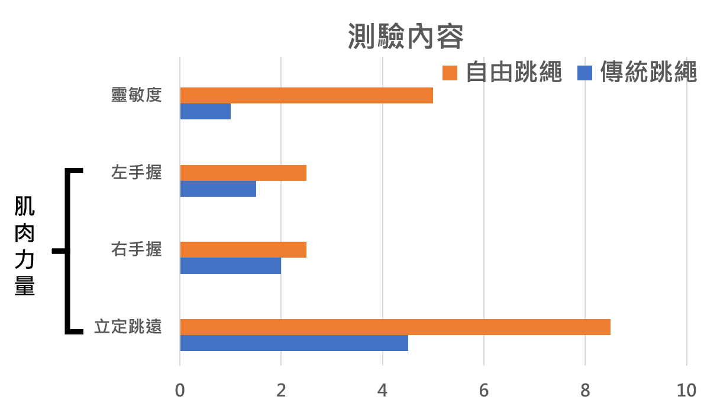

首頁
跳繩健康
繩操
跳繩歷史
關於我們
-跳繩的益處-
1.
全身性
的運動 5. 舒緩肌肉酸痛
2. 跳繩十分鐘，效果等同慢跑半小時 6. 預防骨質疏鬆
3. 相較於慢跑可以
減少膝蓋負擔
7. 增強
心肺耐力
4.
降低罹患心血管疾病
的風險 8. 產生後燃作用長達六小時
-跳繩健身企劃-
在
四個月
的時間內，每個月會安排
不同的動作
來進行！
1.
一跳一迴旋
，每組跳三分鐘，休息一分鐘，共五組、20分鐘
2.
跑步跳
，每組跳三分鐘，休息一分鐘，共五組、20分鐘
3.
一跳二迴旋
，每組跳二分鐘，休息二分鐘，共五組、20分鐘
4.
繩操
，形式不限、20分鐘(關於繩操的範例可以去第三個分頁看看！)
每週
三至四次
，健身二十分鐘加十分鐘練習接下來的健身項目。
並
由較簡單的動作循序漸進
，使每位使用者都能輕鬆駕馭！
-結果-
.
.
.
.
.
.
.
.
.
.
.
-國外學術研究內容-
主題
：促進青少年體育健康 — 課後跳繩體育活動之影響
內容
：兩組研究 —
自由(花式)跳繩、傳統跳繩
測驗內容
：肌肉力量、靈活度、身體組成、骨密度
實驗方式
：持續十二周，每周三次，每次四十五分鐘
